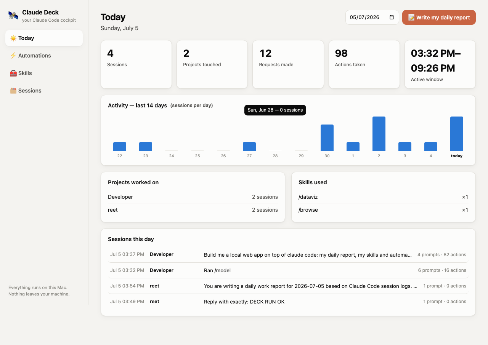
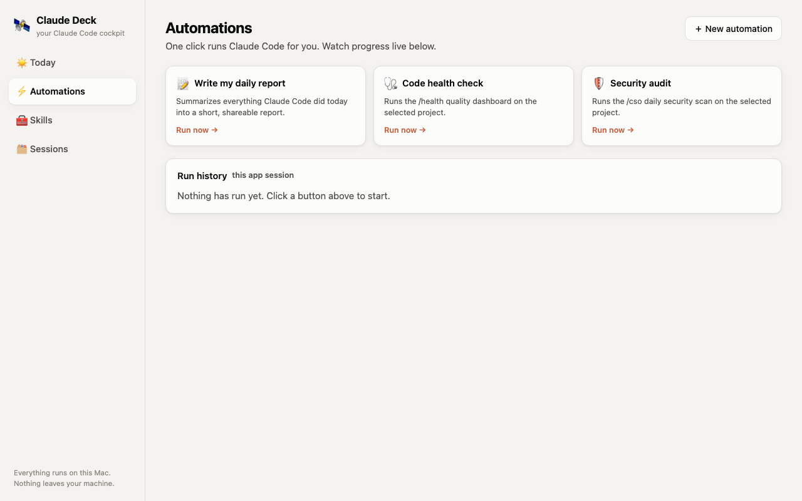
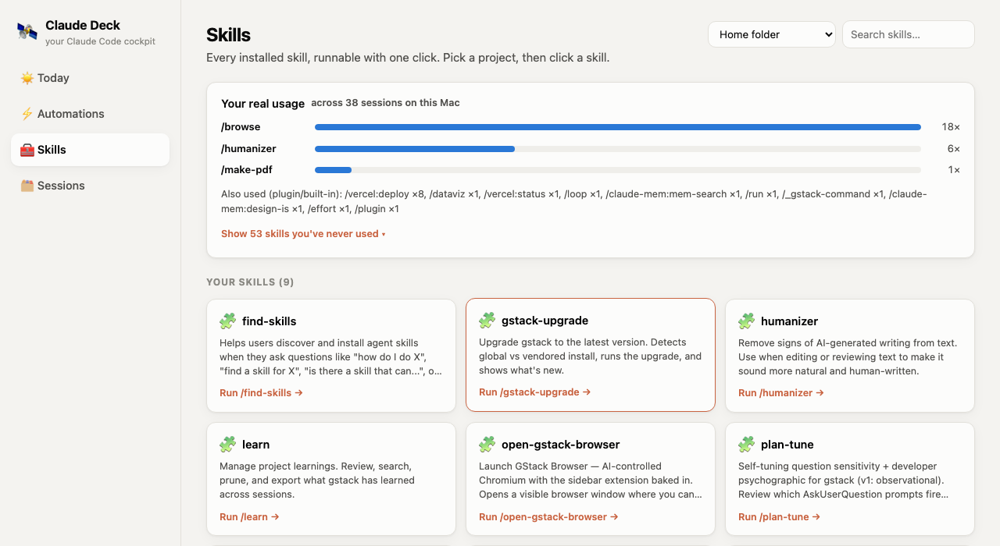
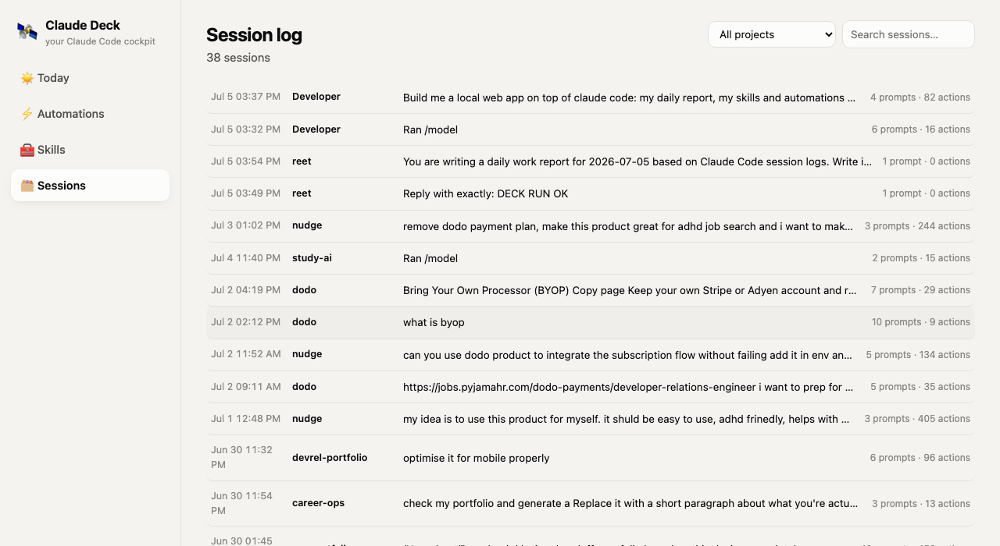

Your daily report, every installed skill as a one-click button, and a
searchable log of every session — reading your real ~/.claude data.
Built for teammates who never touch a terminal.
Stat tiles, a 14-day activity chart, and a one-click AI-written daily report — all from real session data.

Every installed skill as a runnable button — plus a real usage panel showing what you actually use.


Every Claude Code session across every project, searchable, with full readable transcripts.

npm install.~/.claude/projects/*.jsonl transcripts and ~/.claude/skills.claude -p headlessly and stream output live.127.0.0.1. Nothing is ever uploaded anywhere.claude CLI — that only works on your
own machine. There's no way to host that on the public internet without
also giving a public website control of your laptop, so it stays local by
design. This page is just the tour; clone the repo to run the real thing
against your own Claude Code history.
git clone https://github.com/reetbatra/claude-deck.git cd claude-deck node server.js --open